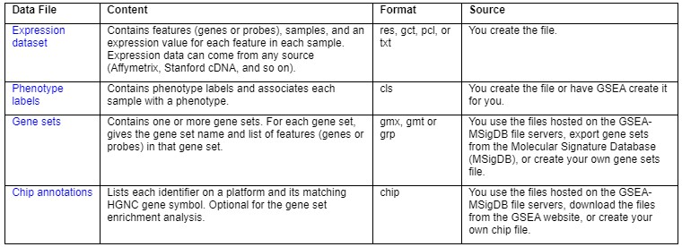
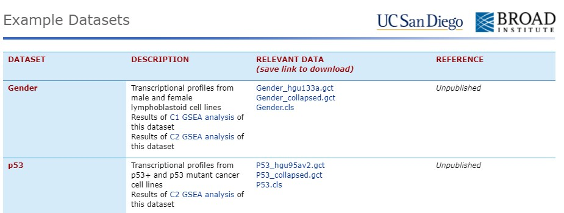
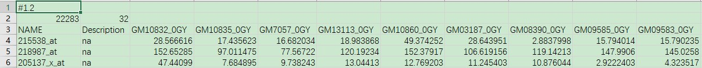
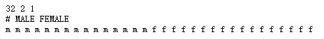
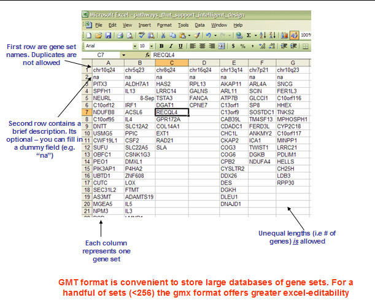
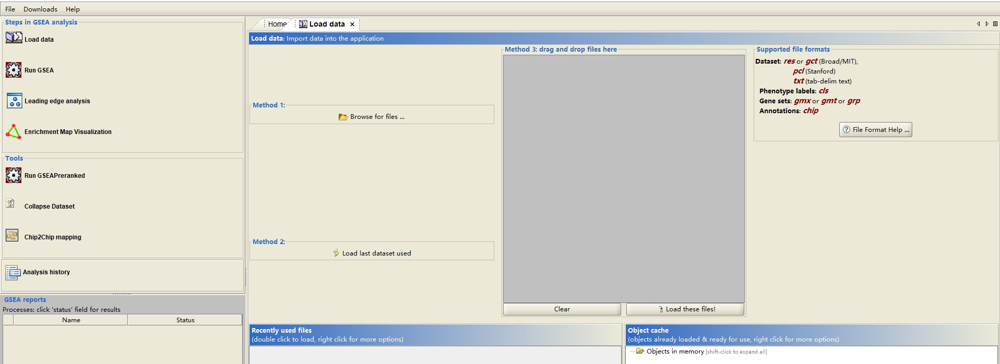

Gene Set Enrichment Analysis
reference:
GSEA user guide
GSEA PNAS paper
一文掌握GSEA,超詳細教程
GSEA vs GO/KEGG
According to expression profile(or something else), the genes can be ranked in a list L.
GO/KEGG focuses on a handful of genes at top/bottom of L. This approach has a few limitation:
- rank list会留下一长串统计上有意义的基因，而没有任何统一的生物学主题。对其的解释非常个性化，取决于生物学家的专业领域。
- 在 significant change gene 的 threshold 设置上，具有很大的人为性
- 单基因分析可能会遗漏对通路的重要影响。细胞过程常常影响一系列协同作用的基因。所有编码代谢途径成员的基因增加20% ，可能会显著地改变通过途径的通量，并可能比单个基因增加20倍更重要。
- 当不同群体研究同一生物系统时，两项研究的统计显著基因列表可能显示极少的重叠
GSEA evaluates data at the level of gene sets. The gene sets are defined based on prior biological knowledge, e.g., published information about biochemical pathways or coexpression in previous experiments.
GSEA 的目标是确定一个基因集S的成员是否倾向于出现在 list L 的顶部或底部。 在这种情况下，该基因集与表型类别(Treatment vs Control)是相关的。
paper test result(example):
使用 GSEA 对来自糖尿病患者与健康对照组的肌肉活检数据进行分析，揭示了在糖尿病患者中与氧化磷酸化相关的基因表达减少，尽管每个基因的平均减少量只有20%。这项研究的结果已被其他微阵列研究和体内功能研究独立检验。
其实，根据GO和GSEA的名称也可以理解二者的区别：Gene Ontology, Gene Set.
前者 focus on gene individual. 比如当探究 overexpression/KO 某个基因 g 的影响时，与之相关的基因可能并不在相同的通路当中，GO的结果，也说明了基因 g 潜在的作用。
后者 focus on gene subset. 在研究一些疾病的时候，主要发生变化的是哪些通路，往往是更受关注的。
GSEA的开发者们同时创建了GSEA-P的软件包，和基因集（Molecular Signature Database, msgdb）。
Principle of GSEA

给定一组先验定义的基因 s (例如，位于同一细胞遗传学带的代谢途径中的基因编码产物，或共享同一 GO 类别) ，GSEA 的目标是确定 s 的成员是随机分布在整个 L 中，还是主要分布在顶部或底部。与表型差异相关的集合将倾向于显示后者的分布。
Three key elements of GSEA ：
- Step1. Calculation of an Enrichment Score(ES).
- ES 反映了集合 s 在整个 rank list L 的极端部分（top or bottom）中被 over represent 的程度。
- method：Along list L， 当遇到 s 中的一个基因时，增加一个累加统计量，遇到非 s 中的基因时，减少。增加的大小取决于基因与表型的相关性（个人理解这里的相关性还是差异的强弱, e.g. foldchange value，不过 Leading-Edge Subset 暗示这种理解似乎并不准确）
- Step2. Estimation of Significance Level of ES.
- 计算每个gene set ES 的 nominal P value
- Step3. Adjustment for Multiple Hypothesis Testing.
- 对每个gene set ES进行规范化，以解释该集的大小，产生normalized enrichment score(NES)。计算每个NES的FDR来控制假阳性比例。
Leading-Edge Subset(前沿子集)
- 基因集可以通过使用多种方法来定义，但并不是一个基因集的所有成员都会参与一个典型的生物学过程。通常提取高得分gene set的核心成员，它们对 ES 是有贡献的。这些基因出现在运行总和到达其最大偏离零点或之前。
高得分基因集（all Leading-Edge Subset）可以根据它们共享的前沿基因子集进行分组。这样的分组可以揭示哪些基因组对应于相同的生物过程，哪些代表不同的过程。
GSEA-P 软件包包括检查和聚类前沿子集(支持文本)的工具。
Usage protocol
Prepare data files
See Preparing data files for GSEA
*all files are tab-seperated. Refered GSEA data format
GSEA官网提供了实例文件

Expression Datasets
有效格式有: res, gct, pcl, or txt.
包含的信息都是相同的，包括 gene id, sample name, feature value
Gender_hgu133a.gct 和 Gender_collapsed.gct 都是 Expression dataset,内容如下：

- 第一行格式固定，“#”开头，标注版本号（#1.2）
- 第二行两列，symbol number和 sample number
- 第三行文件头：name, description, 后面接各个样本名称
- 第四行及之后，就是数据内容，对应第三行文件头:
- name列：统一的命名id
- description列：若无,则 “na”; 需要时参见“GSEA data format”
- 之后的列, 填写统一标准下计算的值（如RPKM）
Phenotype Labels
Gender.cls 是 phenotype labels 文件

First Line format:
- (number of samples) (space) (number of classes) (space) 1
Second Line format:
- # (space) (class 0 name) (space) (class 1 name)
Thrid Line:
- contains a class label for each sample
Gene Sets:
A gene sets file defines one or more gene sets in gmx or gmt format.
For each gene set, the file contains:
- the gene set name
- the list of genes in that gene set.
gmx and gmt

gene sets can be downloaded from MSigDB or created yourself.
Loading Data
expression dataset (res, gct, pcl, or txt), phenotype labels (cls), 一般准备这两个文件就好了.
gene set files (gmx or gmt) 文件可以通过下拉菜单的方式选择
chip annotation 文件是为了转换 id, 所以已经提前转换好id, 就不需要这个文件. 平常得到的 gene symbol 文件就是已经转换好的.
添加文件的方法可以是点击鼠标的方式, 也可以是拖拽的方式
